Prompts, IAs usadas y capturas del proceso, en el orden en que los apliqué. — Mohamed Aharchi Sellami · Diseño de interfaces
Usé ChatGPT para generar la imagen de la portada del PDF.
Prompt:
quiero una iagen en vertical para la portada de este trabajo : Realizar una aplicación tipo Pomodoro Proceso de resolución: Prompts e IAs usadas en el orden aplicado para obtener las distintas versiones de la app, con capturas de pantalla del proceso.
Le pedí a Gemini un prompt muy completo para que Stitch generara el temporizador: modos de concentración, descanso corto (5 min) y descanso largo (15 min), lo más completo posible.
Mi prompt a Gemini:
vale entonces dame el prompt para hacer el pomodoro en el stitch quiero que sea lo mas completo posible quiero que sea por ejemplo 1 hora, con otro de descansos de 5 minutos y otros mas largos de 15 eso miralo tu pero que sea lo mas completo posible y si hacen falta mas cosas hazlas para que sea mas completo
Resultado de Gemini: me dio un prompt listo para copiar y pegar en Stitch, pensado para devolver todo en un único archivo index.html.
Prompt para copiar y pegar en Stitch
"Crea una aplicación web completa y profesional de un temporizador Pomodoro en un único archivo (HTML con CSS y JavaScript integrados). Debe ser totalmente responsiva, con un diseño moderno, limpio e intuitivo.
Requisitos de funcionalidad:
Modos de tiempo personalizables:
Modo Concentración / Trabajo (por defecto 25 minutos, pero ajustable a 60 minutos u otros tiempos).
Descanso corto (5 minutos).
Descanso largo (15 minutos).
Controles del temporizador:
Botones de Iniciar, Pausar y Reiniciar (Reset).
Barra de progreso circular o lineal que se consuma visualmente según avanza el tiempo.
Contadores y estadísticas simples:
Contador de ciclos Pomodoro completados en la sesión actual.
Transición automática o sugerida al siguiente ciclo (por ejemplo: tras 4 Pomodoros, pasar automáticamente al descanso largo).
Alertas y Sonidos:
Reproducción de un aviso sonoro (usando Web Audio API para no requerir archivos de audio externos) al terminar cada contador.
Notificación visual (cambio de color de fondo según el modo activo: concentración, descanso corto o descanso largo).
Opciones avanzadas / Personalización:
Un pequeño panel de ajustes (modal o desplegable) que permita al usuario modificar manualmente la duración de cada modo (ej. cambiar trabajo a 60 min, descanso a 5 min, etc.).
Opción de activar/desactivar el sonido.
Proporciona únicamente el código completo en un solo bloque de código, sin dividirlo, listo para copiar y guardar como index.html."
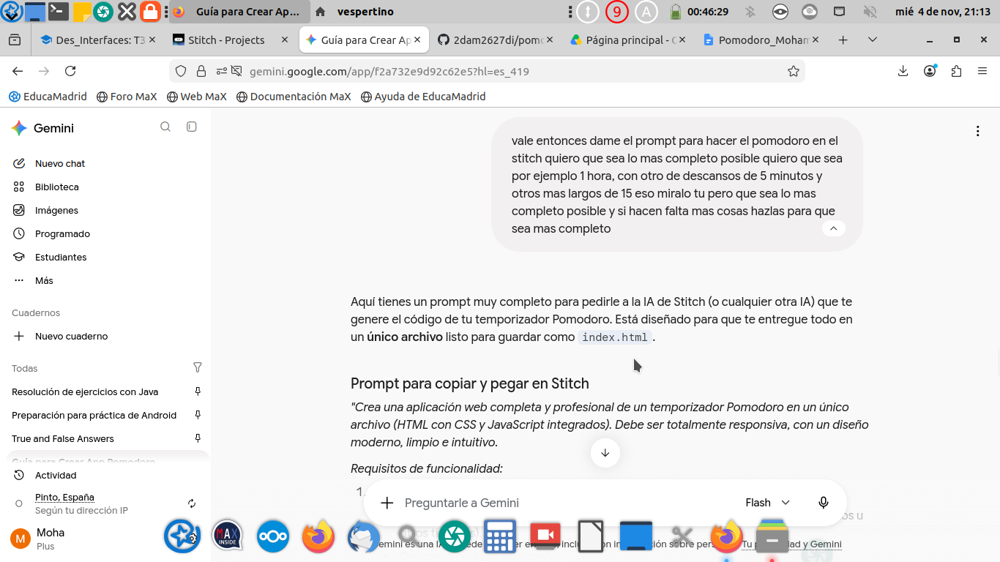
Pegué el prompt de Gemini en Stitch. Stitch respondió que había creado FocusFlow Pomodoro Pro, una aplicación en un único archivo (HTML, Tailwind CSS, Lucide Icons y JavaScript), con estética glassmorphism y fondo de imagen de Unsplash.
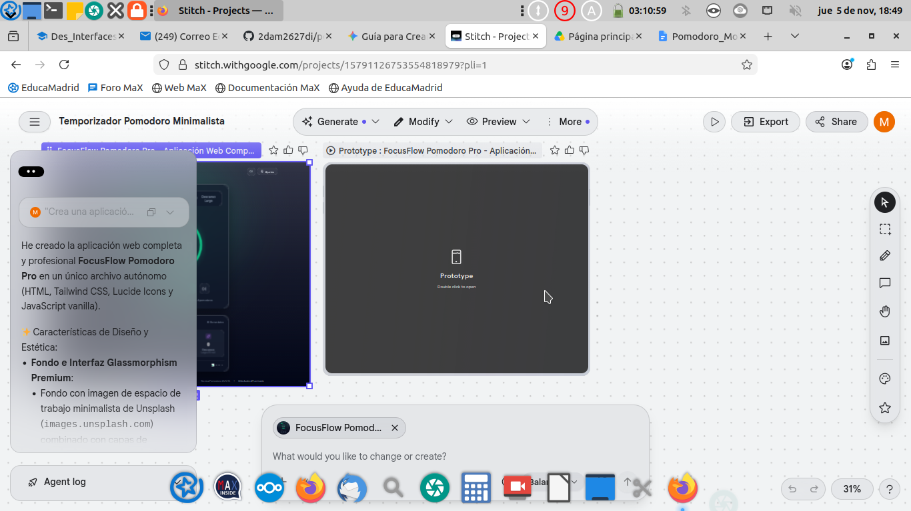
Le envié el HTML a Gemini para ver si faltaba algo o se podía mejorar.
Mi pregunta:
esto es lo que me ha echo, crees que se podria mejorar algo con otro prompt o asi esat bien ? (y le he puesto el html entero)
Resultado de Gemini: dijo que el código estaba muy completo (temporizador circular, modos de concentración y descansos, contadores, selector de ciclos, ajustes y sonido con la API Web Audio). Solo señaló un detalle: la imagen de fondo apuntaba a un marcador de posición de Google (stitch-placeholder-300x300.svg). Además me dio dos prompts de mejora opcionales.
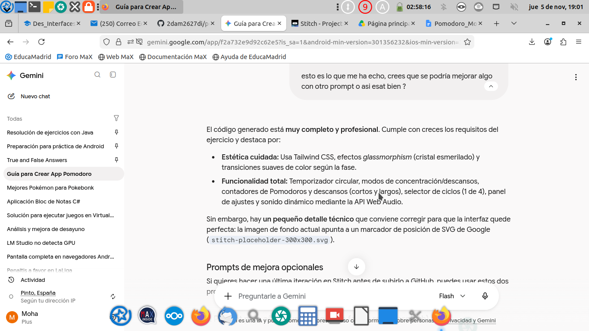
Puse los prompts de mejora en Stitch y comprobé cómo quedaba el Pomodoro. Stitch creó una nueva versión del prototipo.
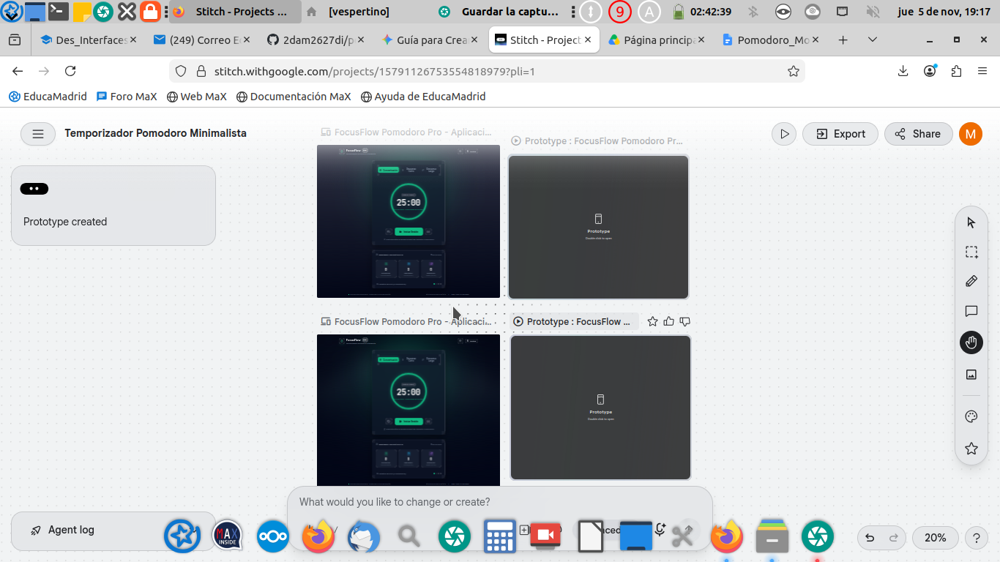
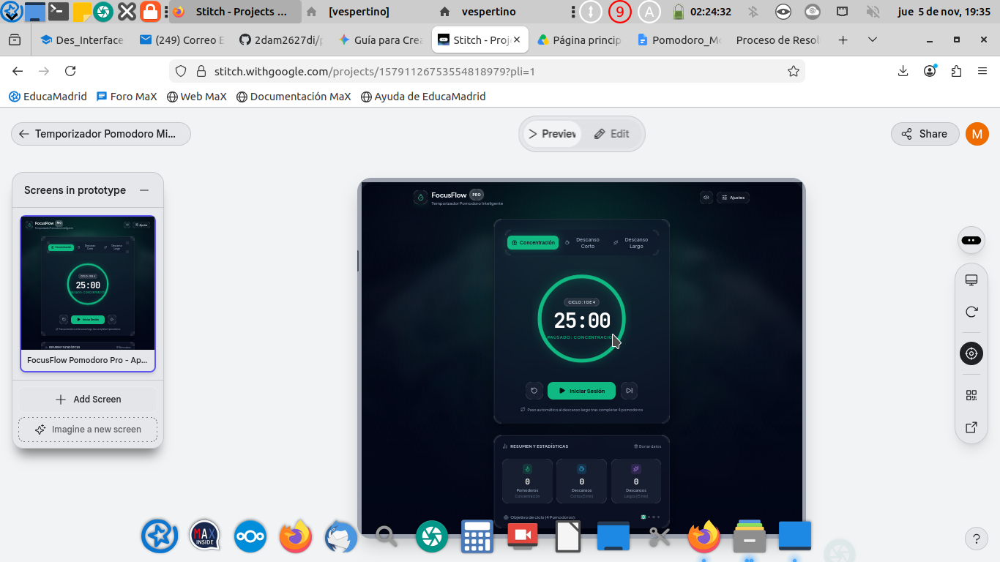
Le pedí a Gemini un HTML con todos los prompts usados.
Mi prompt:
solo me falta un html donde ponga todos los prompts usados, ponme solo los que esten a partir de este mensaje: vale dame otro prompt ese no me ha gustado mucho por los colores, pidele otros mira si falta algo para que sea mas completo y me gustaria tambien que tenga algun fondo (no se de que di tu uno bueno)
Resultado: Gemini me dio un prompts.html sencillo para guardarlo en la carpeta pomodoro del repositorio.
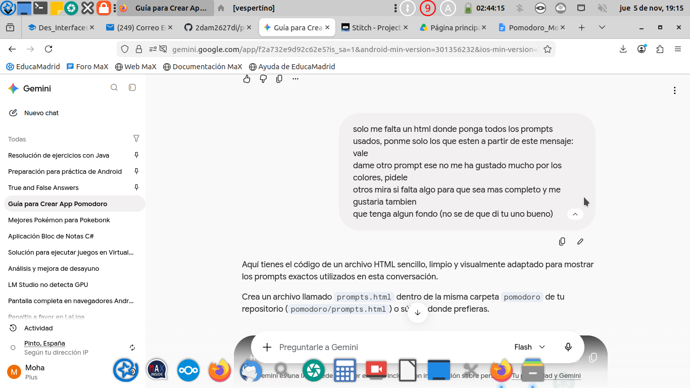
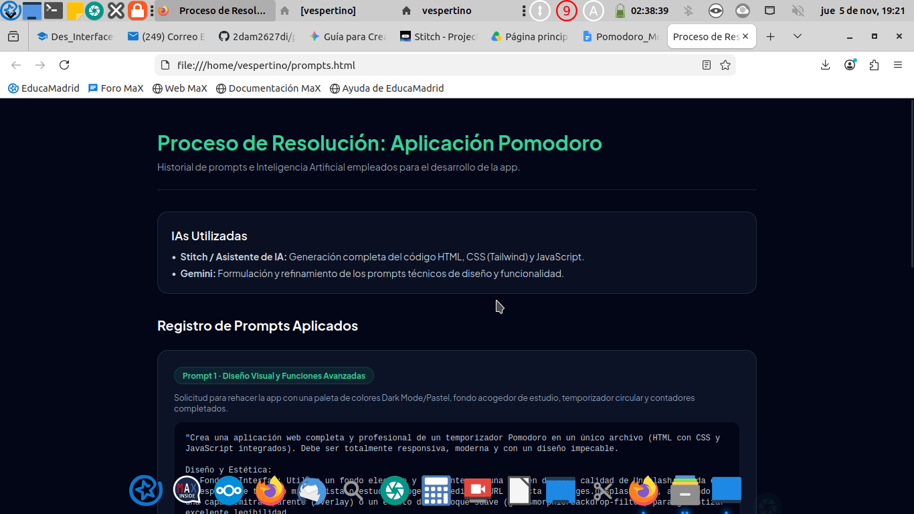
Mientras hacía todo, fui actualizando el repositorio de GitHub y publicándolo con GitHub Pages en la carpeta pomodoro (index.html y proceso.html).
Me di cuenta de que las capturas tenían que estar en esta página de proceso y no en el PDF, y de que no bastaba con poner los prompts: también hay que poner los resultados que da cada IA. Le pedí a Claude que reorganizara esta página, que recuperara las capturas del PDF y que me explicara los pasos que faltaban.
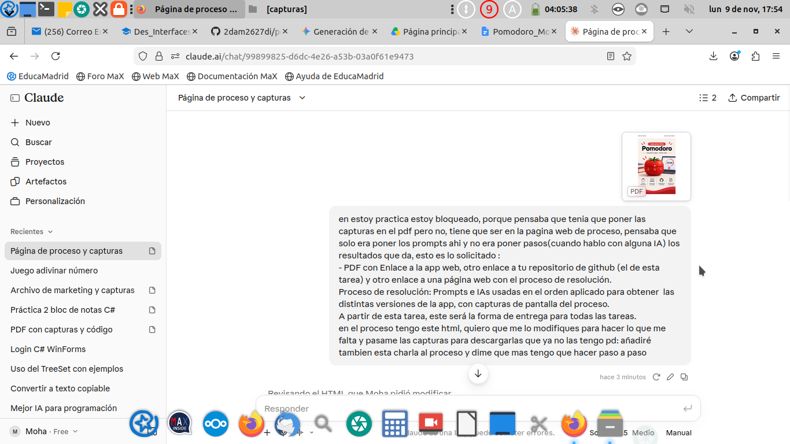
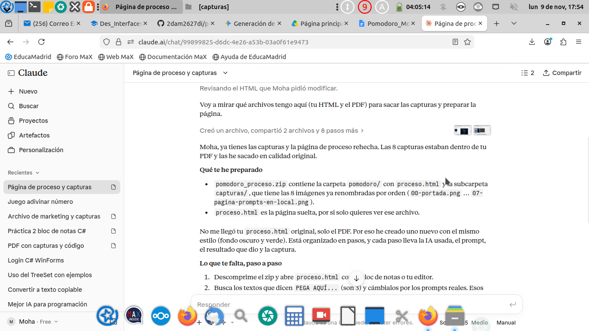
Una vez arreglada la entrega, le pasé a Claude el index.html del Pomodoro y le pregunté si faltaba algo importante o si se podía mejorar.
Mi pregunta:
El problema que tuve lo arregle, solo tenía que hacer otra modificacion y ya se fue, ahora quiero que mires el pomodoro que tengo, crees que hay algo importante que me falte? o cosas por mejorar
Resultado de Claude: dijo que la app estaba bastante completa y me señaló mejoras por orden de importancia:
stitch-placeholder-300x300.svg.handlePhaseComplete siempre arrancaba la siguiente fase sola.setInterval.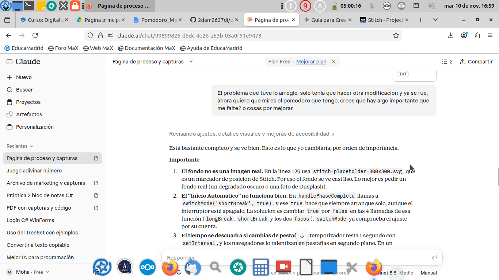
Preferí corregir la app con un prompt para Stitch en lugar de editar el código a mano. Claude me preguntó si Gemini podría mejorar el prompt y me dio un texto para pedírselo.
Mi pregunta a Claude:
prefiero el prompt para stitch, crees que gemini podria mejorarlo?
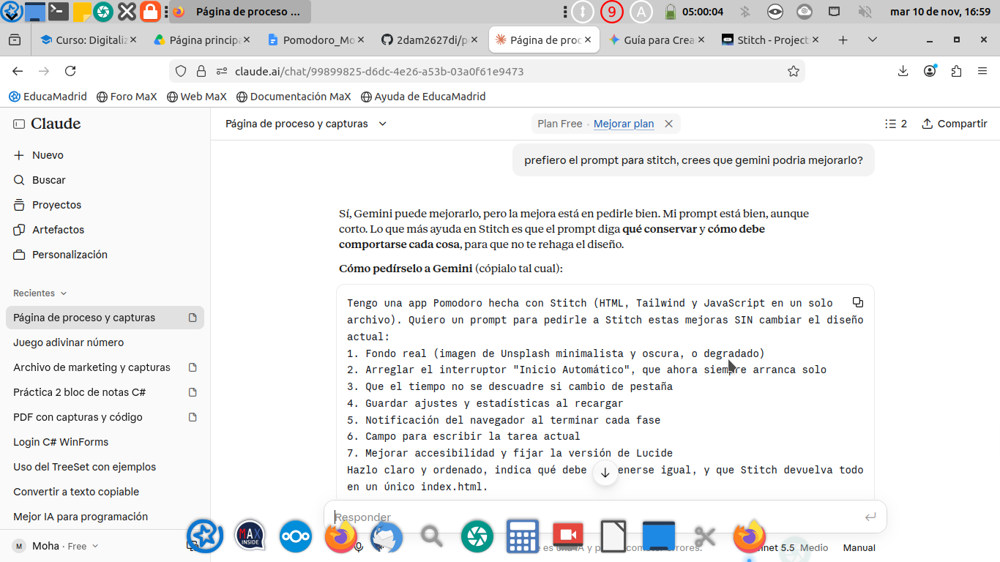
Prompt que le di a Gemini:
Tengo una app Pomodoro hecha con Stitch (HTML, Tailwind y JavaScript en un solo archivo). Quiero un prompt para pedirle a Stitch estas mejoras SIN cambiar el diseño actual: 1. Fondo real (imagen de Unsplash minimalista y oscura, o degradado) 2. Arreglar el interruptor "Inicio Automático", que ahora siempre arranca solo 3. Que el tiempo no se descuadre si cambio de pestaña 4. Guardar ajustes y estadísticas al recargar 5. Notificación del navegador al terminar cada fase 6. Campo para escribir la tarea actual 7. Mejorar accesibilidad y fijar la versión de Lucide Hazlo claro y ordenado, indica qué debe mantenerse igual, y que Stitch devuelva todo en un único index.html. Mejorame este prompt si puedes
Resultado de Gemini: un prompt perfeccionado y estructurado para pasárselo a Stitch, diseñado para que respete el diseño actual y aplique solo las correcciones y funciones nuevas en un único index.html.
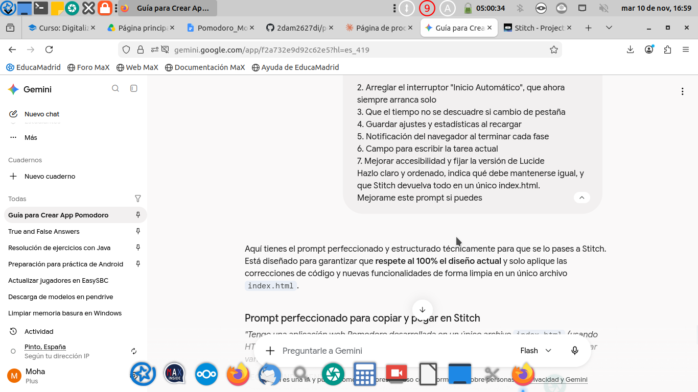
Antes de usarlo en Stitch, le pasé a Claude el prompt que me dio Gemini para ver si estaba bien.
Mi pregunta:
esta bien?
Resultado de Claude: dijo que el prompt estaba bien y me recomendó 4 cambios pequeños: quitar los corchetes de las URLs (formato Markdown), comprobar que la foto de Unsplash carga, corregir la errata «Lógico» por «Lógica» y pedir explícitamente que devolviera el código completo en un único index.html.
Prompt final enviado a Stitch (el de Gemini con esos cambios):
Tengo una aplicación web Pomodoro desarrollada en un único archivo `index.html` (usando HTML, Tailwind CSS, Lucide Icons y JavaScript). Necesito que actualices el código para aplicar varias mejoras funcionales y corregir algunos fallos de lógica. REGLA FUNDAMENTAL: Conserva intacta la interfaz visual actual (estructura HTML, clases de Tailwind, efecto glassmorphism, tipografías, botones, animaciones y paleta de colores). NO rediseñes la app; mantén el diseño existente y limita los cambios a las mejoras solicitadas a continuación. Lista de Mejoras y Correcciones: 1. Fondo e Interfaz: * Sustituye la URL actual del placeholder de imagen por una fotografía real de alta calidad de Unsplash sobre un espacio de trabajo acogedor y oscuro (ejemplo: https://images.unsplash.com/photo-1499750310107-5fef28a66643?q=80&w=1920&auto=format&fit=crop), manteniendo los overlays oscuros y la transparencia para no perder legibilidad. 2. Corrección de la lógica de "Inicio Automático": * Arregla el comportamiento del interruptor de inicio automático (Auto Start). La cuenta atrás NO debe iniciarse sola al cambiar de fase a menos que el usuario tenga esta opción explícitamente activada en el panel de ajustes. 3. Precisión del Temporizador (Segundo plano): * Reescribe la lógica de la cuenta atrás basada en marcas de tiempo (`Date.now()` / timestamp final) en lugar de depender únicamente de `setInterval(1000)`. Esto evita que el temporizador se desincronice o se pause cuando el usuario cambia de pestaña en el navegador. 4. Persistencia de Datos (`localStorage`): * Guarda en `localStorage` las estadísticas acumuladas (pomodoros, descansos cortos y descansos largos completados) y las preferencias del panel de ajustes (duraciones de tiempo, estado del sonido e inicio automático) para que se mantengan al recargar o cerrar la página. 5. Notificaciones Nativas del Navegador: * Integra la API de Notificaciones del navegador (`Notification.requestPermission()`). Al finalizar cada fase (concentración o descanso), emite una notificación nativa además del sonido actual. 6. Input de Tarea Activa: * Añade un campo de texto estilizado (integrado elegantemente en el diseño actual) donde el usuario pueda escribir su "Tarea actual" en la que está trabajando, mostrándola claramente sobre el temporizador o en la tarjeta principal. 7. Accesibilidad y Librerías: * Fija la versión de la librería Lucide Icons cargando una versión estable concreta mediante CDN (por ejemplo: https://unpkg.com/lucide@0.344.0/dist/umd/lucide.min.js). * Mejora los atributos de accesibilidad (`aria-label`, `role="dialog"`, `aria-hidden` en el modal de ajustes, y estados focales adecuados). Entrega ÚNICAMENTE el código completo en un solo bloque de código HTML, listo para copiar y reemplazar directamente en el archivo index.html.
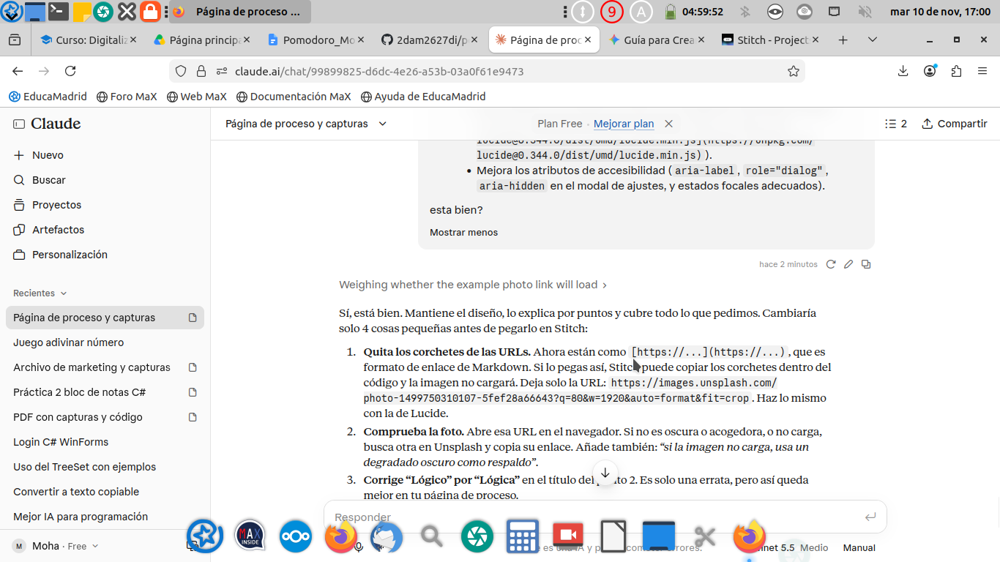
Pegué el prompt final en Stitch. Stitch empezó a actualizar FocusFlow Pomodoro Pro con precisión por timestamps (Date.now()), notificaciones del navegador, el campo de tarea activa y persistencia completa, y creó una nueva versión llamada «FocusFlow Pomodoro Pro - Con Fondo Unsplash y Persistencia». En la vista previa ya aparece el campo «¿En qué estás trabajando ahora?» sobre el temporizador y el estado «Listo para empezar».
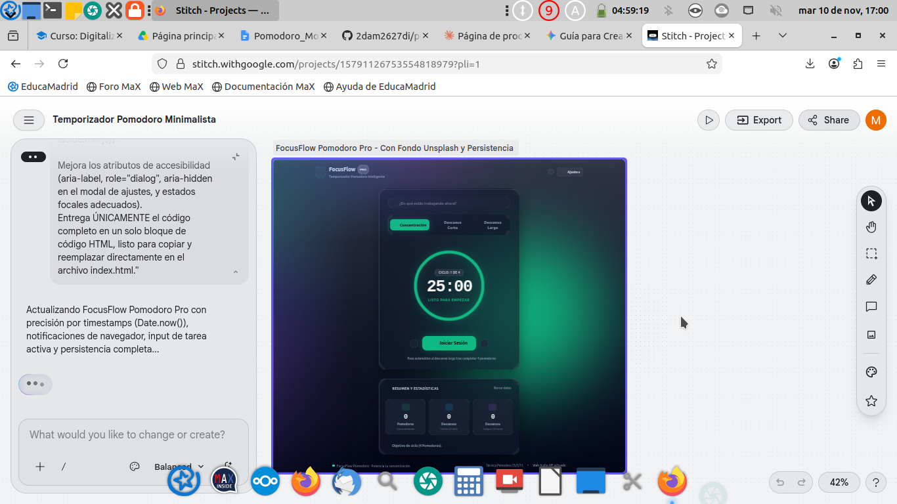